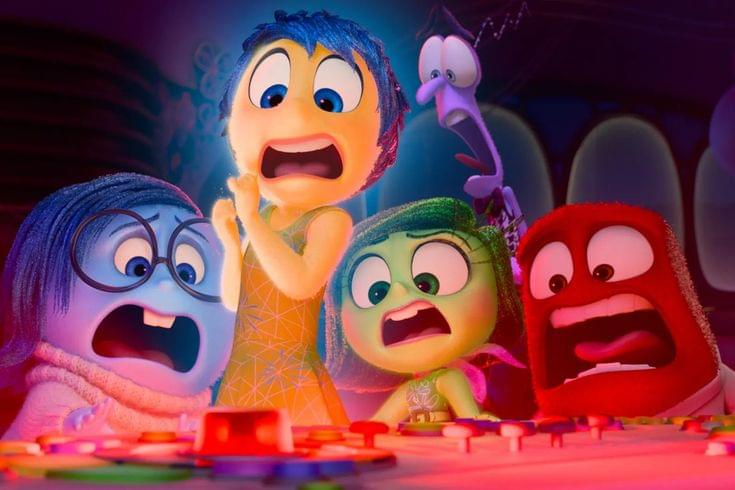
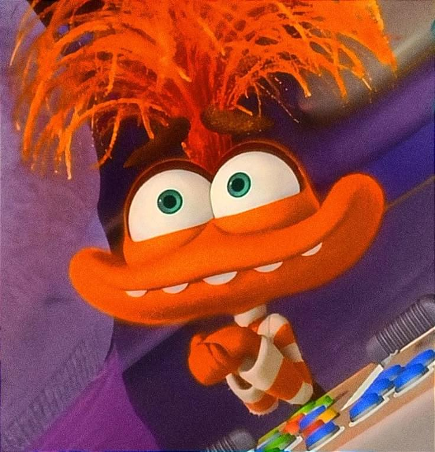

O Início
Aos 11 anos, as ilhas de personalidade de Riley eram simples. Tudo parecia estar sob controle da Alegria.

O Alarme
De repente, o alarme da PUBERDADE soa. O painel de controle muda e tudo vira um caos.

Novos Desafios
No acampamento de hóquei, Riley tenta se enturmar, mas a Ansiedade assume o comando para "protegê-la".